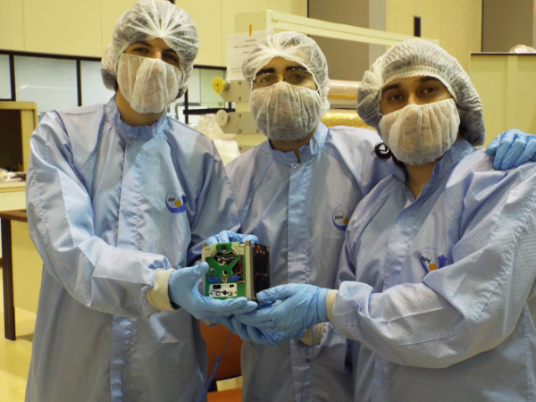
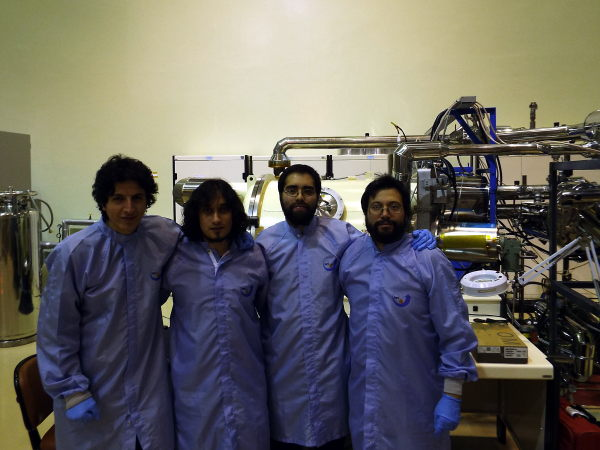
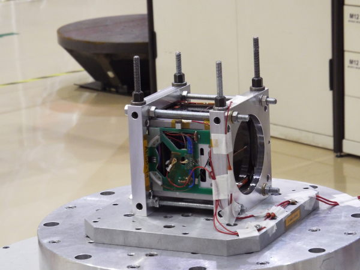
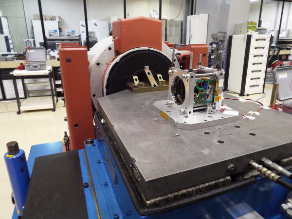
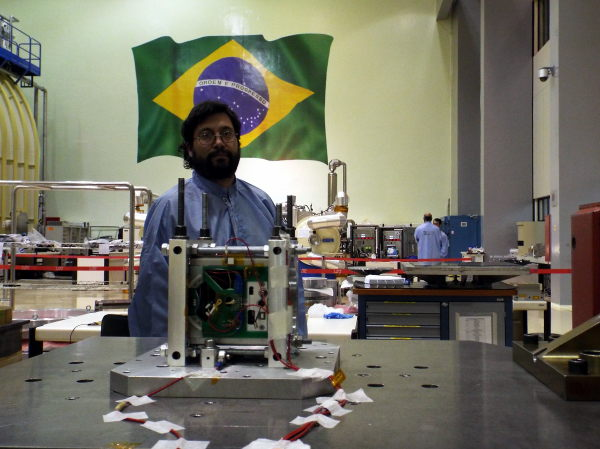

The past Monday, May 12th, SUCHAI cubesat project team traveled to São José dos Campos, Brasil to perform several tests over the spacecraft.
The satellite consists of an 1U Cubesat and it was developed by students from University of Chile. It has educational and scientific objetives: To obtain enough knowledge to build spacecrafts at University and to put some scientific experiments.
All the tests were performed at INPE (Instituto Nacional de Pesquisas Espaciais) using the installations of LIT (Laboratório de Integração e Testes). The satellite was subjected to vibration and thermal-vaccum tests, simulating the conditions of the rocket in a real launch.
Performing those tests is the mandatory step previous to actually launch the satellite.
    